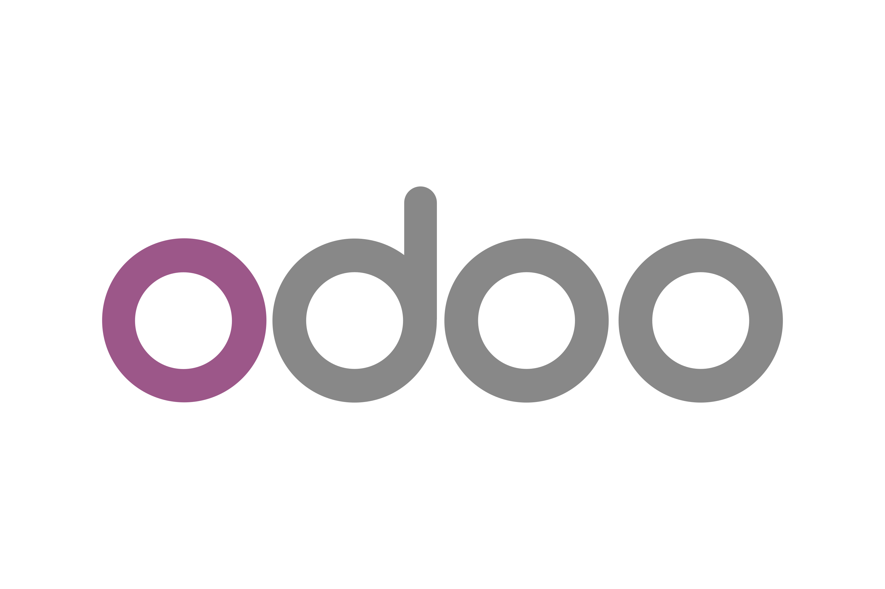
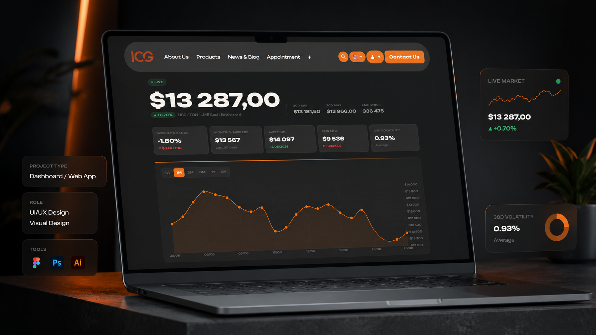
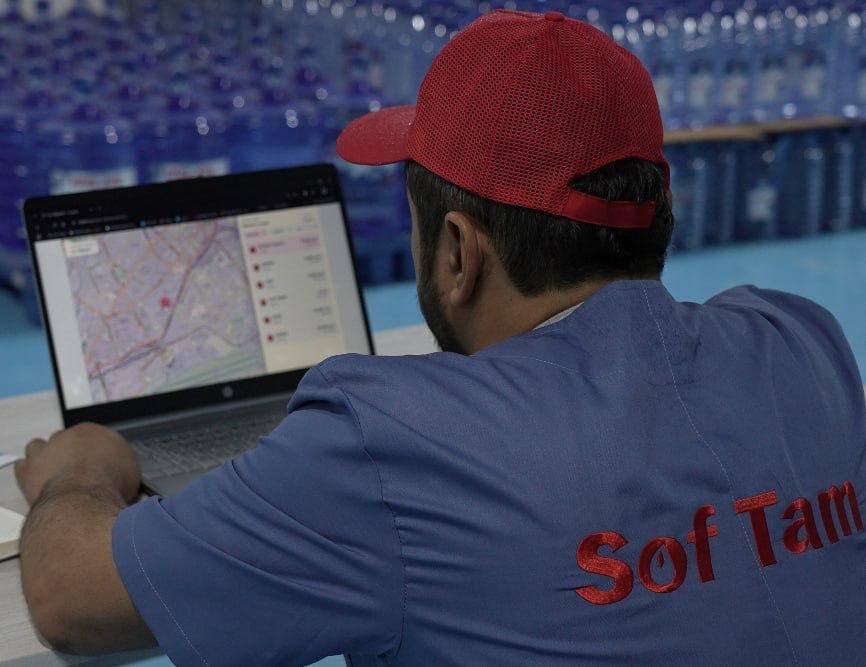
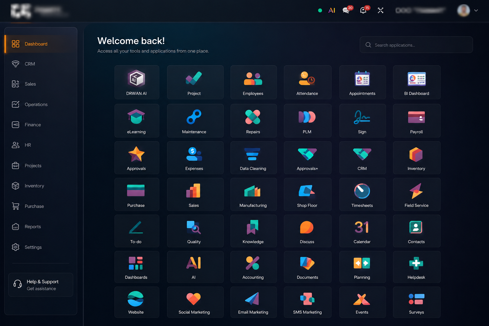
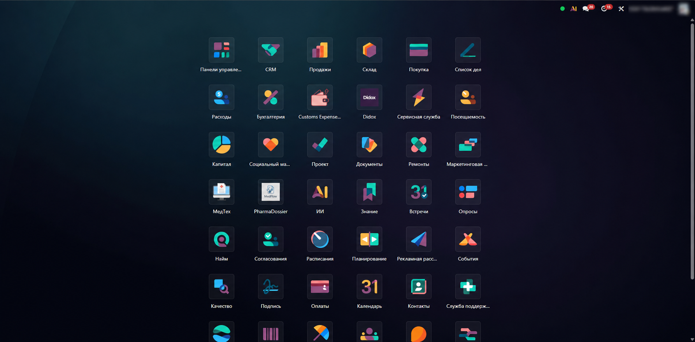
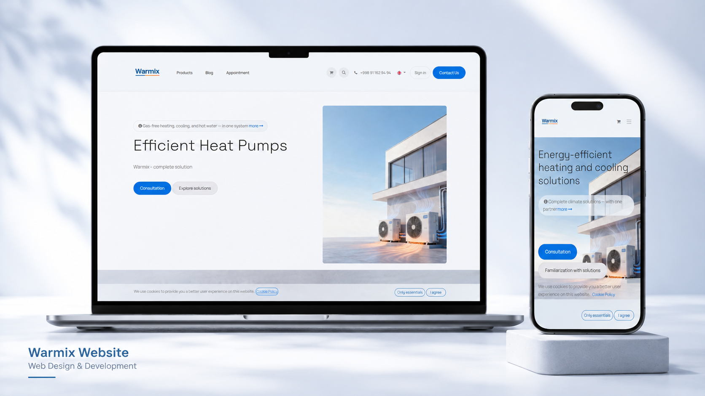
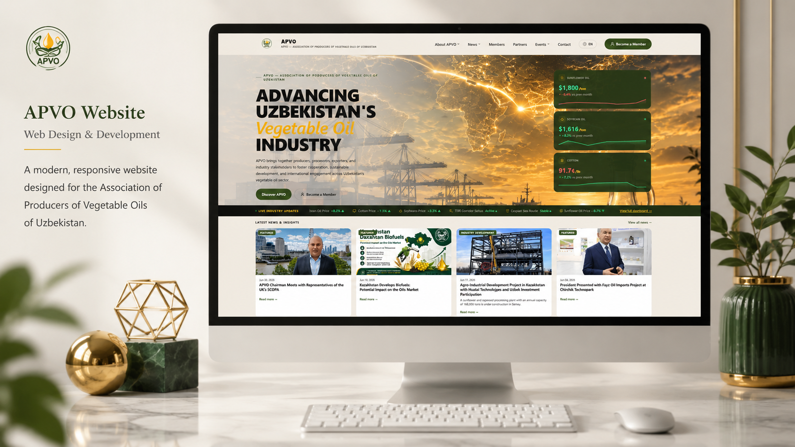
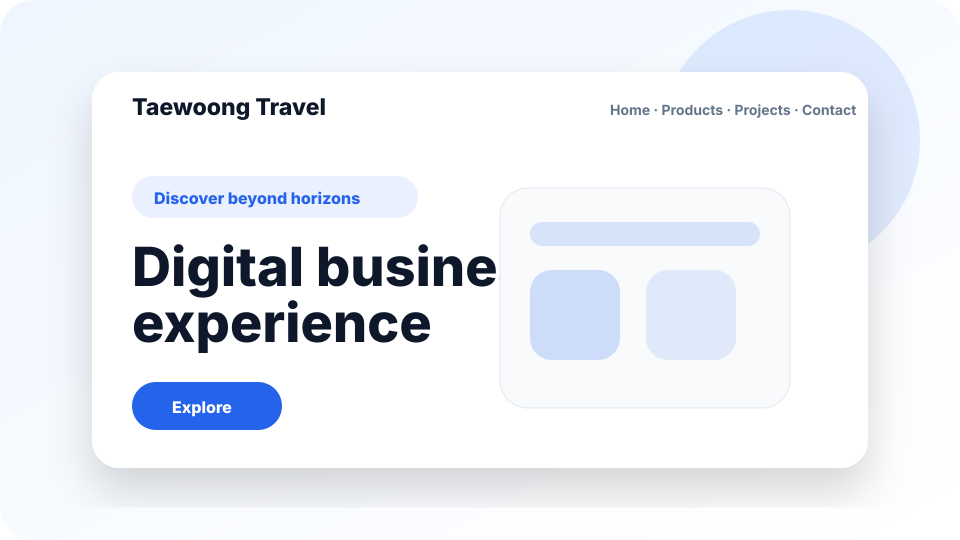
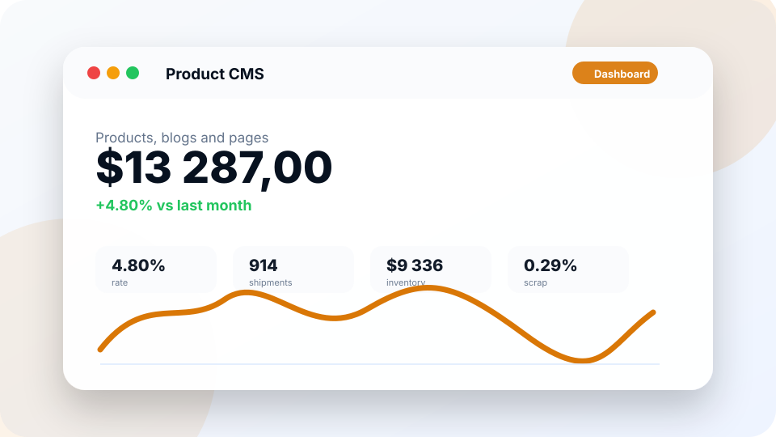

Implementation experience
ERP • Odoo • Business Automation
I design and implement ERP systems that make businesses work smarter.
ERP Project Manager & Business Analyst specializing in Odoo implementation, AS-IS / TO-BE modeling, business process automation, and digital transformation across manufacturing, export, logistics, distribution, travel and consulting projects.
What I do best
Odoo ERP Implementation
Business Process Automation
AS-IS / TO-BE Modeling
Manufacturing & Logistics Projects

▣ ERP Project
Manager ◉ Business
Analyst
Consultant
Manager ◉ Business
Analyst

OdooConsultant
Position
ERP Project Manager
Business Analyst / Odoo Consultant
Business apps and automation
Process analysis
Workflow design
About me
Business logic first, implementation second.
“My Approach
- Understand the real business logic
- Analyze processes and identify weak points
- Design AS-IS and TO-BE processes
- Build practical and scalable digital solutions
- Deliver measurable results
I specialize in ERP implementation, business analysis and digital transformation. My work is focused on understanding how a company operates, identifying weak points, describing AS-IS and TO-BE processes, and turning business needs into practical digital solutions.
I have worked on projects involving sales, warehouse, production, logistics, document workflow, websites and internal business automation.
ERP modules, no-code apps and CRM workflow setup and customization.
Current-state process mapping and documentation.
Future-state automation and responsibility design.
Coordinated project team members across relevant projects.
Core expertise
ERP, analysis, delivery and automation.
A practical operating range across business discovery, requirements, project coordination, implementation support and digital presence.
ERP Implementation
Odoo ERP, ERP logic, process setup, access rights, workflows, business requirements and user adoption.
Business Analysis
AS-IS / TO-BE process modelling, requirements gathering, stakeholder interviews, process optimization and documentation.
Project Management
Task planning, project coordination, team communication, risk control, timeline management and delivery follow-up.
Business Process Automation
Automation of sales, warehouse, production, logistics, document workflow, reporting and custom business processes.
Website & Digital Presence
Corporate websites, product catalog structures, landing pages, digital brand presence and customer-facing digital solutions.
Integration & Technical Coordination
ERP integrations, API-based workflows, 1C-related integration tasks and communication between business and technical teams.
Projects / Case studies
Selected work across ERP, websites and automation.
Each case focuses on industry context, business processes, Akbarshoh’s role and practical business value without inflated claims.

Copper processing / export
Infinity Copper Group
ERP ecosystem for production, warehouse, purchasing, sales and operational control.
Open case study ->
Business digitalization
Softam
Internal operations and workflow digitalization for clearer management visibility.
Open case study ->
Furniture manufacturing
Diran
Production process systematization with Face ID integration context.
Open case study ->
Medical / pharmaceutical distribution
Medicom
Registration, documentation management, custom Odoo app and 1C integration.
Open case study ->
HVAC / website + Odoo leads
Warmix
Corporate website, lead capture into Odoo and business process automation.
Open case study ->
Food oil / import / export
Fayz Oil Imports
Corporate website and product presentation for a food oil import/export brand.
Open case study ->
Association / event workflow
APVO
Website, Odoo event registration, email notifications and multilingual content.
Open case study ->
Travel company
Taewoong Travel
Website and automation solution for travel requests and service presentation.
Open case study ->
Restaurant website
Novikov Cafe Tashkent
Premium restaurant website case for digital presentation and customer communication.
Open case study ->
Logistics
FTOS
Website and automation-ready flow for logistics requests and operational communication.
Open case study ->Work process
A clear path from business need to digital workflow.
A proven 5-step methodology to analyze, design, and deliver ERP & automation solutions that create measurable business impact.
Business Discovery
Interview stakeholders, understand goals, problems and current processes.
AS-IS Analysis
Map current processes, bottlenecks, manual work, risks and duplicated actions.
TO-BE Design
Design improved future processes, automation logic, ERP flows and responsibilities.
Implementation Coordination
Prepare requirements, coordinate the technical team, track tasks and control delivery.
Launch & Improvement
Support implementation, gather feedback, improve workflows and help users adapt.
Skills & Tools
Business, project, technical and AI-assisted work.
A summary of my experience and the tools I use to deliver business value, manage projects, solve problems and work smarter with AI.
ERP & Business
Odoo ERPAppSheetGlideBitrix24amoCRM1C integrationDidoxE-IMZOOnline paymentsHH integrationsERP ImplementationCRM setupBusiness AnalysisDigital TransformationAS-IS / TO-BEProcess OptimizationBusiness Process AutomationRequirements GatheringTechnical Documentation
Project Management
Project ManagementTask ManagementTeam CoordinationStakeholder ManagementRisk ManagementChange ManagementReportingDocumentation
Technical / Tools
Python basics / backend understandingSQLPostgreSQLREST APIAPI integrationsGitLinuxDockerJiraNotionGoogle WorkspaceMS ExcelPowerPoint
AI Tools
ChatGPTClaude.aiGoogle AI StudioCodexClaude CodeAI-assisted analysisAI-assisted documentationAI-assisted automation planningAI tools adoption for business teams
Languages
Uzbek: Native / AdvancedEnglish: AdvancedRussian: Intermediate / Working level
Experience
ERP and transformation work with business and technical teams.
CurrentRakat Systems
ERP & Digital Transformation Project Manager / Business Analyst / ERP Consultant
EducationChirchik State Pedagogical University
History / World History
▥
Rakat Systems
Worked on ERP implementation, business process automation, website projects, AS-IS / TO-BE analysis, project coordination, client communication, and digital transformation solutions for companies in manufacturing, export, logistics, travel, consulting, distribution and corporate sectors.
- Coordinated project teams of around 10 people.
- Worked with business owners, managers, users and technical teams.
- Prepared requirements and project documentation.
- Helped automate sales, warehouse, production, logistics and document workflow processes.
Odoo ERP course
ERP implementation logic and Odoo process configuration.
Full Stack Development course
Technical foundation for implementation and coordination.
Google Project Management course
Project planning, delivery and stakeholder coordination.
Formal education
Chirchik State Pedagogical University — History / World History.